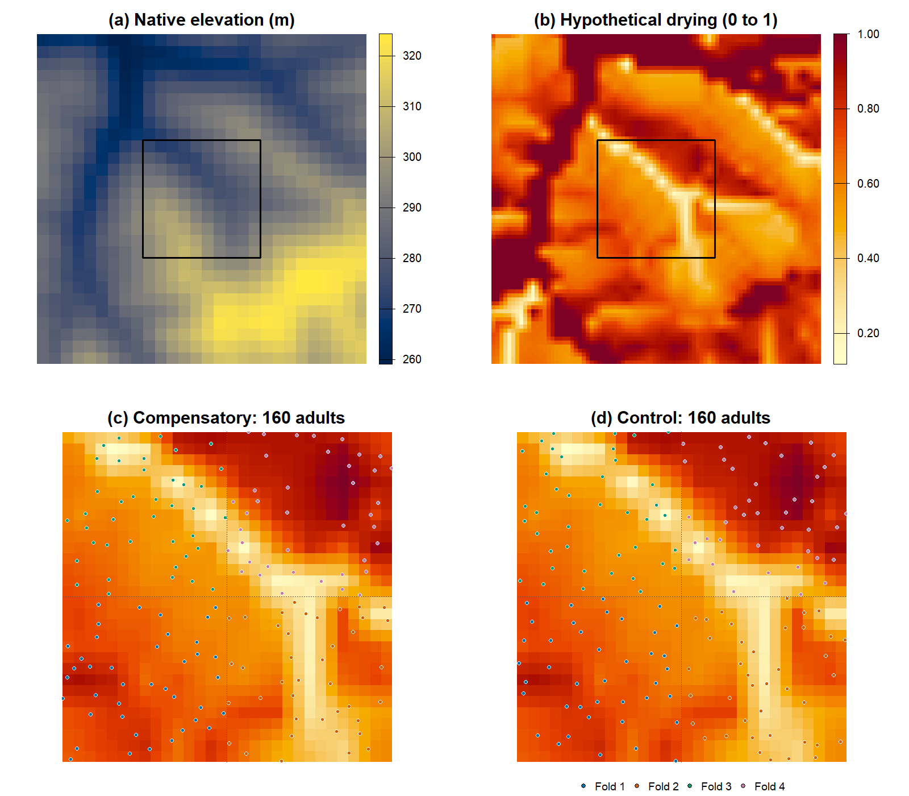
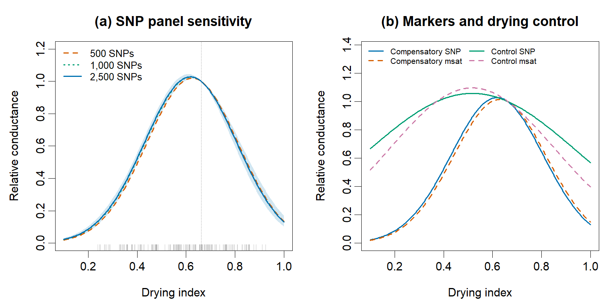
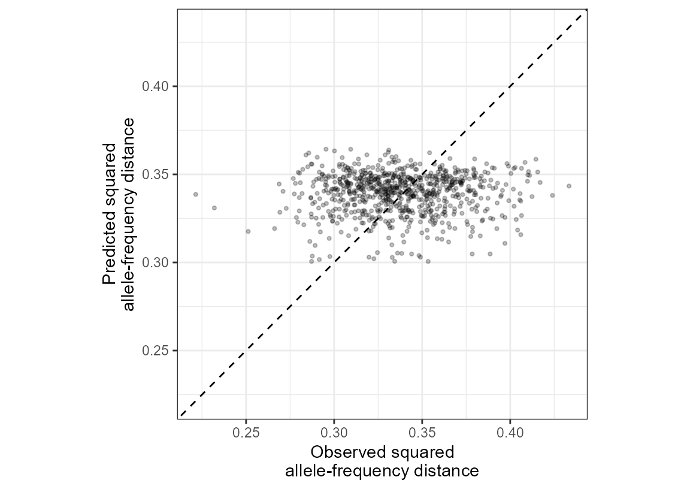
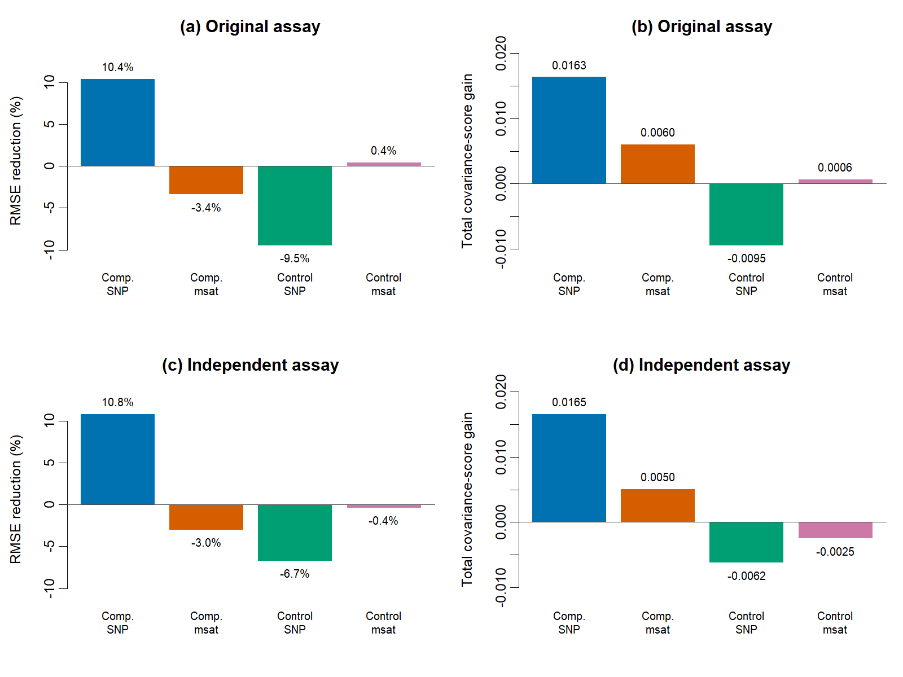

09. Individual Genotypes and Nonlinear Landscape Resistance
Bill Peterman
Source:vignettes/v09-individual-salamanders.Rmd
v09-individual-salamanders.RmdWhat you will learn
Goal. Construct an individual genetic response and assess a nonlinear drying model using matched markers and held-out individuals.
A favorable fitted curve alone is insufficient evidence for isolation
by resistance (IBR), the association between genetic differentiation and
the cumulative difficulty of moving through a landscape. You will
therefore also check whether the model predicts individuals withheld
from fitting. Start with vignette("v01-getting-started", package="terradish")
if you are new to conductance surfaces.
These are simulated animals, with a life cycle inspired by terrestrial Plethodon salamanders, on real terrain near Logan in southeastern Ohio. No actual salamander occurrences or measured water loss are provided. Peterman et al. (2014) found lowest genetic resistance at intermediate water loss in P. albagula and proposed compensatory movement as a possible explanation. That finding motivates the hypothesis here but does not calibrate the simulated demographic or movement rates.
Load the matched example
No simulation software or download is needed. Fitted models, genomic-block resampling, and predictive comparisons are bundled as checked results. The longer fits are shown but never run during a routine vignette build.
library(terradish)
data(individual_salamanders)
files <- system.file("extdata", "individual-salamanders",
package = "terradish", mustWork = TRUE)
source(file.path(files, "teaching-helpers.R"), local = TRUE)
example <- individual_salamanders
results <- readRDS(file.path(files, "assessment.rds"))
predictions <- readRDS(file.path(files, "predictions.rds"))
main <- example$data$compensatory_500
m <- example$metadata
record <- example$models$compensatory_500$SNP2500__IBR__0The data element holds two scenarios with matched
genotypes and coordinates, models holds coefficient and
diagnostic records rather than live fitted objects, and
metadata fixes the environmental transformations. See
?individual_salamanders for the data dictionary. The helper
script only formats tables and evaluates conductance curves, and genetic
responses below use public package functions.
The landscape, animals, and sampling
Two saved SLiM histories follow individual salamanders for 500 years on the same forest landscape, with a maximum age of 20 for each sex. In the compensatory scenario, animals move faster and straighter through moderately dry terrain, but very dry terrain increases danger. The control holds the behavioral drying input at 0.5 while keeping forest-dependent settlement and demography.
Each scenario retains 160 adults, 40 per spatial quadrant, at least
10 m apart and in distinct graph cells. Recorded parents and
grandparents were screened before generating markers, but more distant
relatives can remain. All panels within a scenario use these same adults
in the same order. vignette("v12-data-generation", package="terradish")
gives the demographic rates, movement functions, sampling rules, and
marker-generation steps.

Real terrain, hypothetical drying, and the actual matched sampling locations. The square outlines the 300 m sampling core. The larger map includes the movement buffer.
How to read these maps. The sampling core contains forest and spans a drying gradient. Movement can cross the surrounding domain, including nonforest terrain, even though successful settlement requires forest. A cell’s drying value and its habitat category therefore describe different parts of the life cycle.
From individual genotypes to a covariance response
Load the raw SNP dosage matrix. Rows are adults, columns are loci, and entries 0, 1, and 2 count copies of one allele. Keep the sample order when joining coordinates or other marker panels.
samples <- main$samples
G <- main$snp_dosage[["2500"]]
A <- main$microsat_alleles
c(individuals=nrow(G), SNPs=ncol(G), microsatellites=ncol(A)/2)
#> individuals SNPs microsatellites
#> 160 2500 24
stopifnot(identical(rownames(G), samples$sample_id))How to read the output. There are 160 individuals, 2,500 SNP loci, and 24 paired microsatellite loci. Each microsatellite locus has two columns holding its two allele states. Allele identity defines this response, so do not treat repeat counts as a continuous trait.
For each locus, represent an individual’s two gene copies as allele frequencies. A homozygote has frequency 1 for one allele, and a heterozygote has 0.5 for each of two alleles. Average the allele-frequency inner products across loci, then center among individuals. The result is a positive semidefinite covariance matrix, meaning no linear combination of the individual profiles has negative variance.
For biallelic SNP dosage G, the calculation simplifies to:
Equation 1.
Here L is the number of loci, n is the number of individuals, and H subtracts the individual mean at each locus. The factor 1/2 represents both alleles. Exchanging reference and alternate alleles leaves the centered covariance unchanged. This response does not standardize each SNP by its allele frequency.
# Keep loci unstandardized: this is the response validated for this example.
# Each biallelic locus contributes two allele-frequency features, hence 1/2.
C_snp <- cov_from_genetic_data(G, scale = FALSE, diagonal = "gower",
normalize = "none") / (2 * ncol(G))
# Allele-call features count two gene copies. Divide by 4 to get frequency
# inner products, then average across the 24 loci, including monomorphic loci.
L_msat <- ncol(A) / 2
C_msat <- cov_from_genetic_data(A, input = "allele_calls",
loci = rep(seq_len(L_msat), each = 2), scale = FALSE,
diagonal = "gower", normalize = "none") / (4 * L_msat)
range(eigen(C_snp, symmetric=TRUE, only.values=TRUE)$values)
#> [1] -1.502657e-15 9.745384e-01
max(abs(rowSums(C_snp)))
#> [1] 4.746949e-15How to read the output. Eigenvalues should be nonnegative apart from rounding near zero, and centered rows sum to zero. Centering leaves a zero direction for the overall mean, so the measurement model evaluates the remaining 159 linearly independent contrasts. That does not make loci or pairs statistically independent.
The squared genetic distance implied by a covariance is:
Equation 2.
D_snp <- as.matrix(dist_from_cov(C_snp))
range(D_snp[lower.tri(D_snp)])
#> [1] 0.1668 0.5820How to read the output. This response measures differences between individual allele-frequency profiles and can range from 0 to 2. It is neither the probability of mismatched random gene copies nor , the proportion-of-shared-alleles distance. Changing the response definition changes the scientific meaning of the fitted model.
Optional: compare the response with the biallelic helpers
Why not use the biallelic helpers here?
cov_from_biallelic() is also a valid package entry
point. For an individual dosage matrix, give each row two sampled gene
copies. Its locus-specific denominator uses the pooled allele frequency
p, so rare and common alleles receive different weights that no
constant rescaling can remove. Equation 1 leaves loci unstandardized,
which also gives matched microsatellites a common allele-frequency
interpretation.
N <- rep(2, nrow(G))
C_weighted <- cov_from_biallelic(G, N)
D_weighted <- as.matrix(dist_from_biallelic(G, N))
stopifnot(max(abs(D_weighted - as.matrix(dist_from_cov(C_weighted)))) < 1e-10)How to read this construction. The two biallelic functions give matching covariance and squared-distance forms of this weighted response, which has a different scale and need not lie between 0 and 2. The stored fits do not use it, so if you choose it, refit every candidate and repeat the predictive checks.
Build a nonlinear drying model
Both competing models use the same sampling locations and the same graph, in which adjacent cells connect in eight directions. The uniform model gives all cells equal conductance but keeps geographic positions, raster connections, and domain boundaries, so the comparison asks whether drying adds predictive value beyond that geometry. The alternative makes log conductance quadratic in drying:
Equation 3.
Here is the drying index of a cell, and the fixed values , , and are saved with the data. They come from the original forest-cell drying distribution, but both transformed predictors apply to all graph cells because drying acts throughout the movement domain. Do not multiply them by the forest indicator or reestimate the transformations in each cross-validation fold.
unlist(m[c("center","sd_linear","sd_quadratic")])
#> center sd_linear sd_quadratic
#> 0.66252124 0.14845099 0.03155982How to read the output. These values define the coefficient scale. The second divisor is the standard deviation of squared deviations, not the square of the first divisor. To interpret a coefficient, evaluate Equation 3 on the original drying scale and exponentiate.
library(terradish)
library(terra)
terms <- rast(file.path(files, "drying_terms_10m.tif"))
xy <- as.matrix(samples[c("easting","northing")])
graph <- conductance_surface(terms, xy, directions=8)
S <- C_snp
uniform <- terradish(
S ~ 1, graph, measurement_model=wishart_covariance,
nu=1, optimizer="bfgs", cores=1, leverage=FALSE
)
quadratic <- terradish(
S ~ drying1 + drying2, graph,
conductance_model=loglinear_conductance,
measurement_model=wishart_covariance,
nu=1, optimizer="bfgs", cores=1, leverage=FALSE,
control=NewtonRaphsonControl(maxit=100,ctol=1e-6,ftol=1e-8),
measurement_control=NewtonRaphsonControl(
maxit=100,ctol=1e-7,ftol=1e-9
)
)The loglinear_conductance() coefficients are unbounded,
so check that the optimum is finite and stable. The bundled record for
this fit stores those checks: record$attempts lists every
starting point, record$all_starts_converged and
record$all_starts_same_optimum report that the starts
agree, and record$curvature_positive confirms a proper
maximum.
The covariance model has the form:
Equation 4.
| Component | Stored value | Meaning and scale |
|---|---|---|
| Drying coefficients | coef(quadratic) |
Effects on log conductance in Equation 3 |
| Graph covariance E | Circuit-based graph covariance | Shared variation associated with landscape connectivity |
| Graph scale tau | summary(quadratic)$phi["tau"] |
Nonnegative covariance multiplier, already on the natural scale |
| Nugget | exp(summary(quadratic)$phi["sigma"]) |
Positive individual residual variance |
| Objective scale nu | Fixed at 1 | Scale for covariance quasi-likelihood fitting, not the SNP count |
This guide uses wishart_covariance() as a
covariance quasi-likelihood, an objective based on the
observed and modeled second moments, because linked loci and diploid
genotype frequencies are not a literal collection of independent
Gaussian replicates. Setting nu=1 keeps the
point-estimation objective transparent and does not assert that 2,500
SNPs supply 2,500 independent Wishart degrees of freedom. Do not use the
nominal Hessian standard errors, AIC, or significance tests as
genetic-sampling uncertainty here. Rely instead on the genomic-block
resampling and held-out prediction below.
The covariance model does not automatically keep squared-distance predictions within the response range, so check the predicted means as well as covariance positive definiteness. Every main and held-out prediction here falls within 0 to 2, and none were clipped.
unlist(record$theta)
#> drying1 drying2
#> -0.1859973 -0.4454181
unlist(record$phi)
#> tau sigma
#> 0.2278434 -1.9633599How to read the output. The negative quadratic coefficient produces a hump in conductance, and the linear coefficient shifts its peak relative to the centering value, so interpret the curve rather than either sign alone. The fitted peak is an effective landscape association, not a direct estimate of speed or realized dispersal distance.
theta <- unlist(record$theta)
peak <- m$center - theta["drying1"] * m$sd_quadratic /
(2 * theta["drying2"] * m$sd_linear)
relative_c <- curve_from_record(record,c(0.20,0.65,0.95),m)
c(peak_drying=unname(peak),
intermediate_vs_wet=relative_c[2]/relative_c[1],
intermediate_vs_dry=relative_c[2]/relative_c[3])
#> peak_drying intermediate_vs_wet intermediate_vs_dry
#> 0.6181338 11.6255636 4.6648526How to read the output. Setting the slope of Equation 3 to zero gives the peak, , about 0.62 on the drying index. Conductance at 0.65 is about 12 times its value at 0.20 and about five times its value at 0.95. These are ratios of effective conductance, not survival probabilities. The simulated movement speed function peaked at 0.65, but the fitted circuit response combines movement, settlement, reproduction, and ancestry, so its peak need not coincide with that knot.

Conductance relative to the fixed centering value. SNP panels use the same nested loci and individuals. The shaded band is a central 95% genomic-block bootstrap range conditional on the saved pedigree, sample, and original assay.
How to read these curves. Intermediate drying has higher fitted conductance than either wet or very dry terrain. Compare marker panels on this common conductance scale, not by raw likelihoods or genetic-distance errors, which sit on different response scales. The 500- and 1,000-SNP curves are full-data sensitivity checks, not separate cross-validation experiments, and the microsatellite curve alone cannot establish predictive success.
contrast_ranges <- results$block_contrasts
dimnames(contrast_ranges) <- list(c("2.5%","Median","97.5%"),
c("C(0.65) / C(0.20)","C(0.65) / C(0.95)"))
knitr::kable(contrast_ranges,digits=2)| C(0.65) / C(0.20) | C(0.65) / C(0.95) | |
|---|---|---|
| 2.5% | 9.70 | 3.79 |
| Median | 11.71 | 4.64 |
| 97.5% | 14.45 | 5.67 |
How to read the table. Each of 200 draws resampled the 20 original genomic blocks and refit the model. A ratio greater than 1 favors higher conductance at intermediate drying. The ranges describe variation among genomic-block resamples, conditional on these adults and this ecological history, not uncertainty in demographic rates or among independent populations.
Test prediction before calling this IBR recovery
The assessment withholds one of four spatial quadrants at a time. Each fit uses 120 individuals and scores the 40 withheld individuals, giving 780 distinct within-test pairs per fold and 3,120 scored pairs overall. Withheld individuals contribute nothing to covariance estimation, although their locations and the fixed environmental map remain known.
All graph, drying, and variance parameters are frozen before prediction. Covariance scores use contrasts among the withheld individuals that remove their common mean, and lower scores are better. The score combines a log determinant penalty with the observed covariance relative to modeled covariance, so under a covariance approximation it rewards the correct second moments.
For a new analysis, terradish_cv_folds() provides a
fixed-landscape workflow. Set nuisance = "fixed" so the
held-out responses do not refit graph scale or nugget variance. The
default, "reprofile", answers a different question by
reestimating measurement parameters on the test responses.
# Long-running: run explicitly, after constructing S and graph above.
cv <- terradish_cv_folds(
graph, formulas = list(quadratic = S ~ drying1 + drying2),
folds = samples$fold, model = wishart_covariance, nu = 1,
nuisance = "fixed", baseline = TRUE,
conductance_model = loglinear_conductance,
optimizer = "bfgs", cores = 1, keep_fits = "slim",
leverage = FALSE,
control = NewtonRaphsonControl(maxit = 100, ctol = 1e-6, ftol = 1e-8),
measurement_control = NewtonRaphsonControl(
maxit = 100, ctol = 1e-7, ftol = 1e-9)
)
print(cv)How to read this comparison. Positive
loglik_gain favors quadratic drying over the uniform
baseline for that fold. Read it as a quasi-likelihood prediction score,
not a genotype log probability. A failed fold is missing evidence, so do
not omit it from a favorable comparison. The bundled results also audit
three starting points, gradients, and curvature.
Inspect one fold’s predictions before reading the pooled comparison:
prefix <- "compensatory_500__5000__SNP2500__"
uniform_test <- predictions[[paste0(prefix, "uniform__1")]]
drying_test <- predictions[[paste0(prefix, "IBR__1")]]
stopifnot(identical(uniform_test[c("id1","id2")],
drying_test[c("id1","id2")]))
rmse <- function(x)sqrt(mean((x$observed-x$predicted)^2))
c(uniform=rmse(uniform_test),drying=rmse(drying_test),
reduction_percent=100*(1-rmse(drying_test)/rmse(uniform_test)))
#> uniform drying reduction_percent
#> 0.04256686 0.03275283 23.05555688
range(drying_test$predicted) # Check the genetic response range, not a Dps bound.
#> [1] 0.3005987 0.3642793How to read the output. Both models predict the same 780 held-out pairs after fitting to the other 120 adults, not to these test responses. Lower error means the predicted squared allele-frequency distances are closer to their observed values. Training covariance is recentered within the training subset, so full-sample centering contributes no information.
In this fold the drying model lowers RMSE by 23%, more than the pooled figure in the table below, so expect folds to differ and read the pooled comparison for the overall result. The predictions span only 0.30 to 0.36, while the observed distances span 0.22 to 0.43. The model predicts the average distance expected from landscape position and leaves most variation between individual pairs unexplained.
library(ggplot2)
ggplot(drying_test, aes(observed, predicted)) +
geom_point(alpha = 0.25, size = 0.8) +
geom_abline(slope = 1, intercept = 0, linetype = 2) +
coord_equal(xlim = range(drying_test$observed, drying_test$predicted),
ylim = range(drying_test$observed, drying_test$predicted)) +
theme_bw() +
labs(x = "Observed squared\nallele-frequency distance",
y = "Predicted squared\nallele-frequency distance")
Quadratic-model predictions for one withheld quadrant. The equality line helps reveal over- or underprediction; pairs share individuals and are dependent.
How to read the plot. The spread shows individual variation left after fitting the drying model. Mean error can improve over uniform conductance even when individual pairs remain hard to predict. Compare models with the fold table on identical pairs, because a visually favorable cloud is not a test.
The bundled model records are plain lists, so they cannot be passed
to plot.terradish(). After an explicit refit,
plot(quadratic, type = "fit") shows in-sample covariance
agreement, and
plot(quadratic, type = "surface", data = graph) maps
conductance (use the log-color mapping from Getting Started). Its
model-based intervals do not describe genetic-sampling uncertainty under
nu = 1, so rely on the genomic-block ranges above. Because
drying1 and drying2 are functions of the same
drying value, do not vary them independently in a marginal plot.
Evaluate their combined curve:
drying_values <- seq(0, 1, length.out = 100)
curve <- data.frame(drying = drying_values,
conductance = curve_from_record(record, drying_values, m))
ggplot(curve, aes(drying, conductance)) +
geom_line() + theme_bw() +
labs(x = "Drying index", y = "Relative conductance")
knitr::kable(comparison_table(results$original),digits=4)| Comparison | Error reduction (%) | Covariance score gain | Positive folds |
|---|---|---|---|
| Compensatory SNPs | 10.3755 | 0.0163 | 4 of 4 |
| Compensatory microsatellites | -3.3949 | 0.0060 | 3 of 4 |
| Control SNPs | -9.4858 | -0.0095 | 1 of 4 |
| Control microsatellites | 0.4180 | 0.0006 | 2 of 4 |
How to read the table. A positive percentage means the quadratic model reduces root mean squared error (RMSE) relative to uniform conductance. Positive covariance-score gain also favors the quadratic model. The primary SNP result should improve both measures, with positive score gains in at least three folds. The control checks whether adding drying appears useful even when drying-dependent behavior was absent.
The primary SNP model reduces held-out RMSE by 10.4%, with positive covariance-score gains in all four folds. The control SNP model increases RMSE by 9.5%, so the additional drying terms are not automatically useful in both scenarios.
Matched microsatellites give a different lesson. Their covariance score improves overall, but squared-distance RMSE worsens by 3.4%, and one fold has a negative score gain. The two measures assess different aspects of the predictions, so these 24 loci give mixed evidence even though their fitted curve resembles the SNP curve. Matching individuals removes a sampling difference but does not give 24 microsatellites the information in 2,500 SNPs.
The spatial folds were reused during workflow development, so treat them as exploratory diagnostics, not untouched confirmatory evidence. SNP discovery and minor-allele filtering also used the fixed full sample, so validation is conditional on that panel rather than testing marker selection in a new sample.
A separate genomic assay with no parameter refitting
After freezing all fitted models, the assessment generated 20 new independent genomic blocks, again selecting 2,500 SNPs and 24 matched microsatellites with the same mutation, discovery, and spacing rules. New segregation and mutations supply an assay check on the same recorded pedigrees and adults. No ecological parameters changed, and no fitted parameter was adjusted using the new assay.
knitr::kable(comparison_table(results$independent_assay),digits=4)| Comparison | Error reduction (%) | Covariance score gain | Positive folds |
|---|---|---|---|
| Compensatory SNPs | 10.7650 | 0.0165 | 3 of 4 |
| Compensatory microsatellites | -3.0053 | 0.0050 | 3 of 4 |
| Control SNPs | -6.7186 | -0.0062 | 1 of 4 |
| Control microsatellites | -0.3770 | -0.0025 | 1 of 4 |
How to read the table. The new SNP assay reduces RMSE by 10.8%, with positive covariance-score gains in three of four folds. The matched microsatellite RMSE worsens by 3.0% despite an overall covariance-score improvement. The SNP result therefore reproduces across genomic realizations of these same adults, while the microsatellite evidence remains mixed. Neither result supplies independent ecological replication.

Held-out prediction for the original and independent genomic assays. Positive RMSE reduction and positive covariance-score gain favor the drying model. Control and matched microsatellite results remain visible.
Keep IBE distinct from IBR
Isolation by environment (IBE) asks whether environmental differences between sampled endpoints relate to genetic structure beyond the connectivity model. IBR uses the entire intervening landscape. Two pairs with the same endpoint drying difference can have different circuit connectivity because their routes cross different terrain.
In an MLPE (maximum likelihood population effects) model,
mlpe_covariates() adds an environmental-difference
predictor to the mean pairwise response. For an
absolute drying difference, this adds gamma times the absolute endpoint
difference, with gamma unconstrained, while the model accounts for pairs
that share individuals.
In the covariance framework used here,
wishart_covariates() adds a centered environmental
covariance kernel. For endpoint difference matrix Delta, its
kernel is:
Equation 5.
Delta holds absolute (transform="absdiff") or squared
(transform="sqdiff") drying differences, and neither gives
a Gaussian radial-basis kernel. The added covariance contributes lambda
times Delta to the squared-distance mean, but its coefficient constraint
and estimation objective differ from MLPE.
endpoints <- data.frame(drying=samples$drying)
# MLPE: environmental difference enters the pairwise mean.
mean_environment <- mlpe_covariates(
endpoints, transform="absdiff", scale=FALSE
)
# Covariance model: a nonnegative environmental kernel is added to Sigma.
covariance_environment <- wishart_covariates(
endpoints, model="wishart_covariance",
transform="absdiff", scale=FALSE
)This simulation contains no IBE mechanism, so this guide fits neither
model. See
vignette("v08-ibe-ibr-workflow", package = "terradish") for
fitted examples and how to read their coefficients.
Scope of this dataset
Treat this as a teaching example and keep inferences at that level. The simulation has one ecological pedigree per scenario, reflected boundaries, an assumed ancient population, and a small study domain. Drying covaries with forest and terrain, so its fitted curve describes effective connectivity rather than an isolated physiological effect. A fitted conductance surface is not a calibrated map of field movement probabilities, and the 10 m graph is computational support for nearby samples, not a claim that terrain was measured at 10 m.
For a longer reproduction, copy the installed refit.R
and teaching-helpers.R files to a writable directory, then
opt in with
Sys.setenv(TERRADISH_RUN_EXTENDED_EXAMPLE = "true"). The
refit script runs serially, saves every starting point, and can resume
from completed records. Ordinary rendering only reads the stored
results.
Quick reference
library(terradish)
library(terra)
data(individual_salamanders)
files <- system.file("extdata", "individual-salamanders", package = "terradish")
main <- individual_salamanders$data$compensatory_500
samples <- main$samples
G <- main$snp_dosage[["2500"]]
# 1. Individual SNP covariance; rows stay in the order of `samples`.
S <- cov_from_genetic_data(G, scale = FALSE, diagonal = "gower",
normalize = "none") / (2 * ncol(G))
# 2. Graph from the fixed drying transformations (layers drying1, drying2).
terms <- rast(file.path(files, "drying_terms_10m.tif"))
graph <- conductance_surface(terms, as.matrix(samples[c("easting", "northing")]),
directions = 8)
# 3. Fit uniform and quadratic-drying models with the same response (slow).
ctl <- NewtonRaphsonControl(maxit = 100, ctol = 1e-6, ftol = 1e-8)
mctl <- NewtonRaphsonControl(maxit = 100, ctol = 1e-7, ftol = 1e-9)
uniform <- terradish(S ~ 1, graph, measurement_model = wishart_covariance,
nu = 1, optimizer = "bfgs", leverage = FALSE, control = ctl,
measurement_control = mctl)
quadratic <- terradish(S ~ drying1 + drying2, graph,
measurement_model = wishart_covariance, nu = 1, optimizer = "bfgs",
leverage = FALSE, control = ctl, measurement_control = mctl)
quadratic$convergence$message # "converged" before interpreting
coef(quadratic) # negative drying2 gives a hump in conductance
# 4. Judge the drying model by held-out prediction, not nominal SEs or AIC.
cv <- terradish_cv_folds(graph, formulas = list(quadratic = S ~ drying1 + drying2),
folds = samples$fold, model = wishart_covariance, nu = 1,
nuisance = "fixed", baseline = TRUE, optimizer = "bfgs",
leverage = FALSE, control = ctl, measurement_control = mctl)
cv$summary # positive total_loglik_gain favors drying over uniform conductanceSummary of key functions
| Function | Purpose |
|---|---|
cov_from_genetic_data() |
Construct the unweighted individual response with explicit normalization |
cov_from_biallelic() /
dist_from_biallelic()
|
Construct the alternative allele-frequency-weighted response |
dist_from_cov() |
Convert the chosen covariance to its matching squared-distance representation |
conductance_surface() |
Connect raster cells and locate sampled individuals |
loglinear_conductance() |
Convert covariate bases to positive conductance |
terradish() |
Fit the conductance and measurement model |
mlpe_covariates() |
Add endpoint differences to an MLPE mean |
wishart_covariates() |
Add centered endpoint environmental covariance |
See also
-
vignette("v01-getting-started", package="terradish")for the basic graph workflow. -
vignette("v03-mlpe-pairwise-distance", package="terradish")for fitting pairwise genetic distances with MLPE. -
vignette("v04-model-comparison", package="terradish")for comparisons under their stated likelihood assumptions. -
vignette("v08-ibe-ibr-workflow", package="terradish")for endpoint environment and intervening landscape effects. -
vignette("v02-wishart-covariance", package="terradish")for choosing a covariance or pairwise-distance response. -
vignette("v12-data-generation", package="terradish")for how the salamander histories and samples were simulated. -
vignette("v06-spline-conductance", package="terradish")for flexible nonlinear responses at the pond scale.
Reference
Peterman WE, Connette GM, Semlitsch RD, Eggert LS (2014). Ecological resistance surfaces predict fine-scale genetic differentiation in a terrestrial woodland salamander. Molecular Ecology, 23(10), 2402-2413. https://doi.org/10.1111/mec.12747.